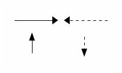
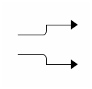
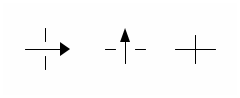

-------> <------= ^ | | : | v
線條
水平線跟垂直線分別用 - 跟 | 表示，箭頭則用 < > ^ v (或大寫 V)。
輸出結果：

轉折
線條的轉折處，直角用 +，圓角則用 / 或 \。
+--->
----/
----\
+--->
輸出結果：

|
Note
|
ditaa 目前仍不支援斜線，/ 跟 \ 雖然可以用來表現圓角。
|
交錯
| ^ | ----> --|-- --+-- | | |
輸出結果：
